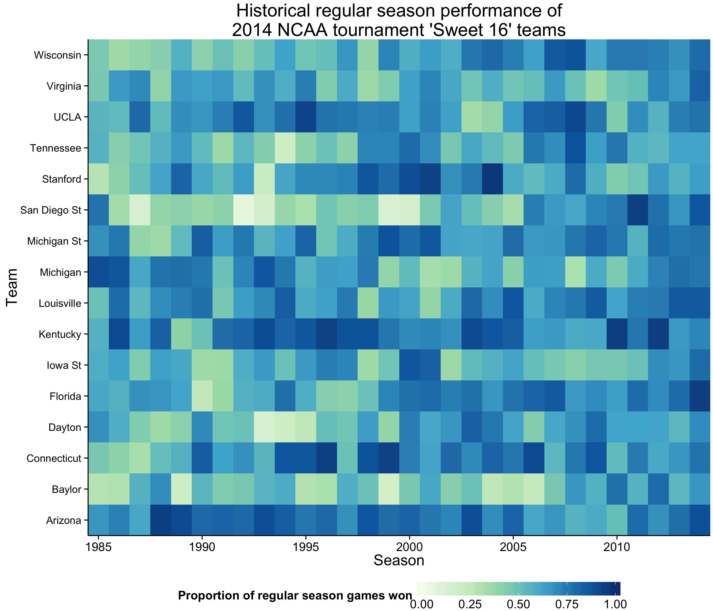

Tidy data [1]
- Each variable forms a column.
- Each observation forms a row.
- Each type of observational unit forms a table.


Sara E. Moore
24 February 2015
You have:
ggplot2 (such as what was presented during the 2013 or 2014 UC Berkeley SCF/D-Lab R Bootcamp),ggplot?ggplot?lattice is better at trellis graphs?
"Good grammar is just the first step in creating a good sentence."
Wickham, 2010
Specify a statistical graphic using components of statements:
data),stat: identity, count, mean, etc.),geom: points, lines, etc.),aes: color, shape, size, transparency, etc.),coord: cartesian, polar, map, etc.),scale, guide, and others: axes, log-transformed scales, legends, etc.), facet), position, theme, etc.), andggplot commandggplot, set graph defaults.data).ggplot(data=, aes(x=,y=,...)) +
geom_????(...) +
...
ggplot() +
geom_????(data=, aes(x=,y=,...),...) +
...
source(paste("assets","load_marchmania2015.R",
sep=.Platform[["file.sep"]]))
# change this path to the location of your CSVs downloaded from kaggle
# note that required packages will be installed automatically
ncaa.bball = load.clean.summ.ncaa("~/Dropbox/kaggle/marchmania2015")
library(ggplot2)
ggplot(data=ncaa.bball[["games"]], aes(x=lscore, y=wscore)) +
geom_point() +
xlab("Points scored by losing team") +
ylab("Points scored by winning team") +
ggtitle("Final scores of NCAA basketball games\nNovember 1984 - April 2014") +
theme(text = element_text(size = 16))
library(munsell) # color system used by ggplot2
ggplot(data=ncaa.bball[["games"]], aes(x=lscore, y=wscore)) +
# default is bins=c(30,30)
# can use scalar when no. of bins for x and y are same.
# here alternatively specifying binwidth:
stat_binhex(binwidth=c(4, 4)) +
# mnsl converts [hue lightness/color purity] to hex color codes.
# scale_fill_gradient == scale_fill_continuous.
scale_fill_gradient("Number of games", trans = "sqrt",
low=mnsl("7.5G 2/4"), high=mnsl("7.5G 9/6")) +
xlab("Points scored by losing team") +
ylab("Points scored by winning team") +
ggtitle("Final scores of NCAA basketball games\nNovember 1984 - April 2014") +
theme_classic(base_size = 16)
ggplot(data=ncaa.bball[["games"]], aes(x=lscore, y=wscore)) +
# default is bins=c(30,30)
# can use scalar when no. of bins for x and y are same.
# here alternatively specifying binwidth:
geom_hex(stat = "binhex", binwidth=c(4,4)) +
# scale_fill_gradient == scale_fill_continuous.
# the mnsl fxn converts [hue lightness/color purity] to hex color codes.
scale_fill_gradient("Number of games", trans = "sqrt",
low=mnsl("7.5G 2/4"), high=mnsl("7.5G 9/6")) +
xlab("Points scored by losing team") +
ylab("Points scored by winning team") +
ggtitle("Final scores of NCAA basketball games\nNovember 1984 - April 2014") +
theme_classic(base_size = 16)

| geom | stat | modifiable defaults |
|---|---|---|
geom_boxplot() |
stat_boxplot() |
max length of whiskers (beyond hinges) = 1.5*IQR |
geom_bar() |
stat_bin() |
30 bins: binwidth = [range of x]/30 |
geom_histogram() |
stat_bin() |
30 bins: binwidth = [range of x]/30 |
geom_freqpoly() |
stat_bin() |
30 bins: binwidth = [range of x]/30 |
geom_dotplot() |
stat_bindot() |
30 bins: binwidth = [range of x]/30; "dotdensity" method |
geom_bin2d() |
stat_bin2d() |
30 bins for each of x and y |
geom_hex() |
stat_binhex() |
30 bins for each of x and y (calls hexbin::hexBin()) |
geom_density2d() |
stat_density2d() |
Gaussian kernel; bandwidths (x and y) set by Silverman's "rule of thumb"; 100 grid points for x and y (calls MASS::kde2d()) |
geom_density() |
stat_density() |
Gaussian kernel; bandwidth set by Silverman's "rule of thumb" (calls stats::density()) |
geom_violin() |
stat_ydensity() |
Gaussian kernel; bandwidth set by Silverman's "rule of thumb" (calls stats::density()); all violins have same area before trimming tails, tails are trimmed to [range of y] |
geom_smooth() |
stat_smooth() |
if n<1000, stats::loess() with polynomial degree 2, \(\alpha=0.75\), etc.; else, gam::gam() with penalized cubic regression splines, etc.; 80 evaluation points |
geom_quantile() |
stat_quantile() |
3 quartiles; "br" method (modified Barrodale & Roberts method; calls quantreg::rq()) |
geom_contour() |
stat_contour() |
10 pretty breakpoints covering [range of z] |
ggplot transformationsstat_ecdf: Empirical Cumulative Density Functionstat_function: Superimpose a function.stat_qq: Calculation for quantile-quantile plot.stat_spoke: Convert angle and radius to xend and yend.stat_sum: Sum unique values. Useful for overplotting on scatterplots.stat_summary: Summarise y values at every unique x.stat_summary_hex: Apply funciton for 2D hexagonal bins.stat_summary2d: Apply function for 2D rectangular bins.stat_unique: Remove duplicates.stat_identitygeom_tilelibrary(RColorBrewer) # brewer.pal
library(grid) # unit
tourney.teams.2014 = as.character(
unique(subset(ncaa.bball[["team.season.summ"]],
(season==2014)&(max.tourney.round>="Sweet Sixteen"))$team.name))
p = ggplot(subset(ncaa.bball[["team.season.summ"]],
team.name%in%tourney.teams.2014),
aes(x=season, y=team.name, fill=win.pct)) +
geom_tile() +
scale_fill_gradientn(
"Proportion of regular season games won",
colours = brewer.pal(9,"GnBu")[3:9],
na.value="grey80", breaks=seq(0,1,0.25),
guide = guide_colorbar(barwidth = 15, barheight = 1)) +
scale_x_continuous("Season", expand = c(0, 0)) +
scale_y_discrete("Team", expand = c(0, 0)) +
ggtitle("Historical regular season performance of\n2014 NCAA tournament 'Sweet 16' teams") +
theme_classic(base_size=16) +
theme(legend.position = "bottom",
axis.text.y = element_text(size = 11),
plot.margin = unit(c(0,0.1,-0.4,0.1), "cm"))
p

tidyr, and summaries with ggplot2library(tidyr) # gather
duke.2014 = subset(ncaa.bball[["teams"]],
(season==2014)&(team.name=="Duke"))[,
c("date","fg.pct","fg3.pct","ft.pct","result")] %>%
tidyr::gather(shot.type, pct, -c(date, result))
library(scales) # date_format
ggplot(duke.2014, aes(x=date, y=pct, color=shot.type)) +
geom_line() +
geom_line(stat = "hline", yintercept = "mean",
linetype="dashed", alpha=0.65) +
geom_rug(data=subset(duke.2014,(result=="Loss")&(shot.type=="fg.pct")),
sides="b", color="grey20") +
scale_x_datetime("Game date", labels = date_format("%b %Y")) +
ylab("Proportion of shots made") +
scale_color_discrete("Type of shot",
labels=c("two point field goal","three point field goal","free throw")) +
ggtitle("Duke's per-game shot percentages, 2013-14 season:\nbottom ticks indicate losses; dashed lines are season averages") +
theme_classic(base_size = 16) + theme(legend.position = "bottom")
ggplot2scale portions of the grammar of graphicsggplotggplot2 graphicsggplot to look so much like a ggplotggplot2graphics::pairs), parallel coordinate plots, and network plots with ggplot2vcd::ternaryplot) and other additional *geom*s for ggplot2.ggplot2ggplot2 (example 1, example 2)ggplot2
ggplot with plotly# start with a static ggplot
p = ggplot(subset(ncaa.bball[["team.season.summ"]],
max.tourney.round>="Sweet Sixteen"),
aes(x=season, y=win.pct, color=max.tourney.round)) +
# ideally we would jitter here, but plotly has trouble with this
# geom_point(position = position_jitter(w = 0.4, h = 0.002)) +
geom_point(size=3, alpha=0.7) + # instead use transparency
xlab("Year") +
ylab("Proportion of regular season games won") +
scale_color_discrete("Highest tournament round achieved") +
ggtitle("Regular season performance of 'Sweet Sixteen' teams 1985-2014, by season") +
theme_classic(base_size = 16) + theme(legend.position = "bottom")
p
ggplot with plotly# library(devtools)
# install_github("ropensci/plotly")
library(plotly)
# get a plot.ly account and get your api key here:
# https://plot.ly/settings/api
# plug it in with your username in the statement below.
# set_credentials_file("username", "xxxxxxxxxx")
py <- plotly()
# recall p is the object returned by ggplot
# plot.info = py$ggplotly(p) # in an R session, opens in browser
plot.info = py$ggplotly(p, session="knitr") # embed in knitr document
# if you're embedding in a knitr document,
# be sure to also set the code chunk
# plotly=TRUE
clickme# library(devtools)
# install_github("nachocab/clickme")
library(clickme)
cmplot = with(subset(ncaa.bball[["team.season.summ"]],
max.tourney.round>="Sweet Sixteen"),
clickme("points",
x = season, y = win.pct,
names = team.name,
color_groups = as.character(max.tourney.round),
x_title = "Year", x_format = "",
y_title = "Proportion of regular season games won",
color_title = "Highest tournament round achieved",
color_group_order = levels(max.tourney.round)[4:8],
title = "Regular season performance of 'Sweet 16' teams",
subtitle = "1985-2014, by season",
file_path = paste(getwd(),"clickme0.html",
sep=.Platform$file.sep),
height = 600, width = 700))
# cmplot # in an R session, open in browser
# embed in knitr document:
cmplot$iframe()$hide()
googleVis (Flash)library(googleVis)
# data.frame with >=4 cols: x, y, id, time. color and size optional,
# but if you don't provide them,
# it will choose them for you (if there are columns left to use)
mc = gvisMotionChart(
subset(ncaa.bball[["team.season.summ"]],
!is.na(tourney.seed))[,c("team.name", "season", "win.pct",
"points.avg", "mov.avg", "tourney.seed")],
idvar="team.name", timevar="season",
xvar="win.pct", yvar="tourney.seed",
sizevar="mov.avg", colorvar="points.avg",
options=list(width=750, height=650))
# plot(mc) # in an R session, opens in browser
print(mc, 'chart') # embed in knitr document
ggplot2 graphics \(\rightarrow\) SVG via plot.ly's R APIggplot2ggplot2 and lattice graphics \(\rightarrow\) SVG image[1] L. Wilkinson. The Grammar of Graphics. Springer-Verlag New
York, 2005. DOI: 10.1007/0-387-28695-0.
[2] H. Wickham. ggplot2. Springer Science + Business Media,
2009. DOI: 10.1007/978-0-387-98141-3.
[3] H. Wickham. "A Layered Grammar of Graphics". In: Journal of
Computational and Graphical Statistics 19.1 (2010), pp. 3-28.
DOI: 10.1198/jcgs.2009.07098.
[4] H. Wickham. "Tidy Data". In: Journal of Statistical Software
59.10 (2014).
/
#